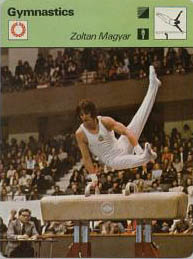

Zoltán Magyar (HUN)
1976 and 1980 Olympic PH Champion
3-Time
World PH Champion

Medal Total
- Olympic Games: 2 Gold
- World Championships: 3
Gold
- World Cup: 2 Gold
- European Championships: 2
Gold
Zoltan was born on December 13,
1953 in Budapest and trained at FTC Ferencvaros with coach Laszlo Vigh.
Magyar's father wanted his son to be a soccer player and was disappointed that
his son had taken up gymnastics -- until he won his first world title on pommel
horse in 1974. Magyar went on to defend that title at the 1978
and 1979 world championships.
Today, he's a veterinarian in Budapest.
- Competition Results
-
- 1967
HUN Youth Championships: 4th AA
1968
Summer Pioneer Olympics: 1st AA
1969
Budapest Junior Championships: 1st AA
HUN Junior Championships: 4th AA
1970
Jr. Friendship Tournament (Druzhba): 5th Team, 1st PH
1971
Jr. Friendship Tournament (Druzhba): 6th Team, 7th AA, 1st PH, 4th
PB
1972
- Olympic Games: 8th Team, 29th AA
Riga International: 3rd PH
- USA-HUN Dual Meet: 2nd AA
-
- 1973
- European Championships: 1st PH, 17th AA
HUN Championships: 1st AA
HUN Masters Tournament: 1st AA
-
- 1974
HUN Championships: 1st AA
HUN Masters Tournament: 1st AA
- World Championships: 4th Team, 15th AA, 1st PH
-
- 1975
- Chunichi Cup: 8th AA
- European Championships: 4th AA, 1st PH,
4th V, 4th PB
Grand Prix of Paris: 2nd AA, 2nd FX, 2nd PB, 2nd HB, 3rd PH, 3rd V
- HUN Championships: 1st AA
HUN Masters Tournament: 1st AA
HUN-GDR-Georgian SSR: 1st AA, 1st PH, 1st PB
- Pre-Olympics: 2nd V, 5th AA, 5th PH, 6th FX, 6th HB
- World Cup: 7th AA, 1st PH, 6th FX
-
- 1976
- Blume Memorial: 1st AA
Chunichi Cup: 10th AA
- ESP-HUN Dual Meet: 1st Team, 1st AA
- HUN Championships: 2nd AA
- HUN-CUB Dual Meet: 2nd AA
- Joachim Blume Memorial: 1st AA
Moscow News: 1st PH
- Olympic Games: 4th Team, 9th AA, 1st PH,
5th V
- Riga International: 3rd AA, 1st PH, 2nd
HB
- TCH-HUN Dual Meet: 1st AA
- Tokyo Cup: 1st PH, 2nd HB
-
- 1977
- European Championships: 8th AA, 1st PH,
4th V, 5th PB, 5th HB
- European Tournament of Ingelheim: 3rd AA
- HUN Championships: 1st AA
- Paris Grand Prix: 1st PH, 3rd AA, 3rd HB
- University Games: 1st PH, 12th AA
-
- 1978
- FRA-HUN-POL Tri-Meet: 4th AA
- HUN Championships: 2nd AA
- ITA-HUN Dual Meet: 1st Team, 1st AA
- Ontario Cup: 1st AA
- Simo Sappinen Memorial: 2nd AA
- World Championships: 6th Team, 12th AA, 1st PH
- World Cup: 5th AA, 1st PH,7th PB, 8th
HB
-
- 1979
- American Cup: 5th AA
- Gold Top Milk International: 1st AA
- University Games: 3rd PH, 7th AA
- World Championships: 6th Team, 18th AA, 1st PH
-
- 1980
- American Cup: 5th AA
- HUN Championships: 2nd AA
- Olympic Games: 3rd Team, 9th AA, 1st PH
- This page was created on November 14, 1997 and was
last updated on February 01, 2020.
© Gymn Forum
-